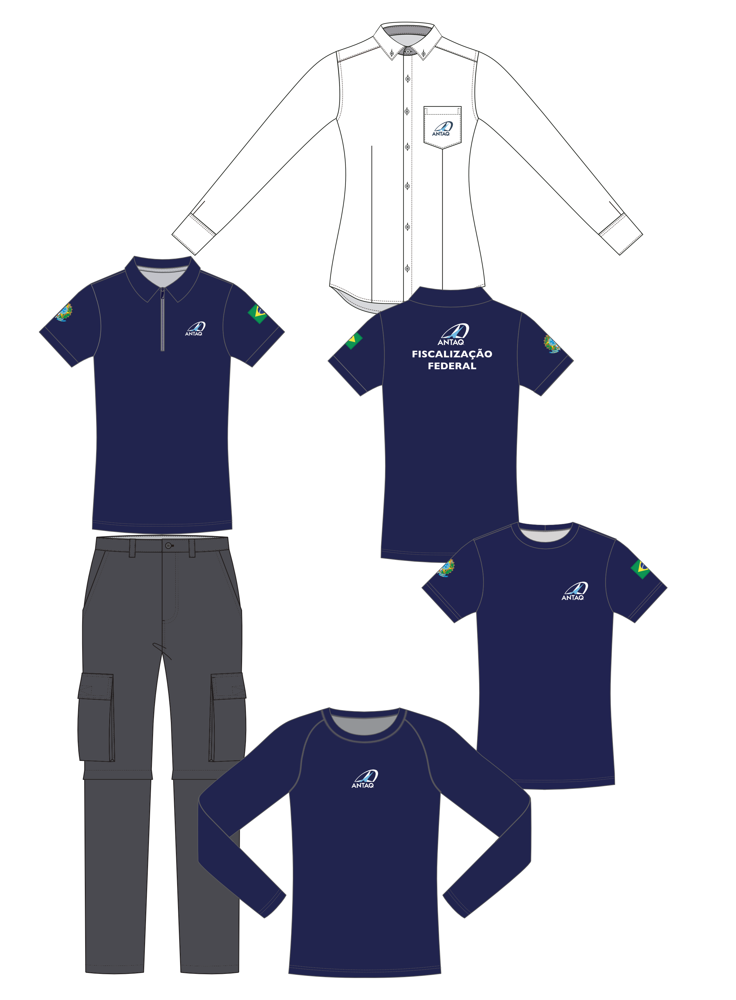
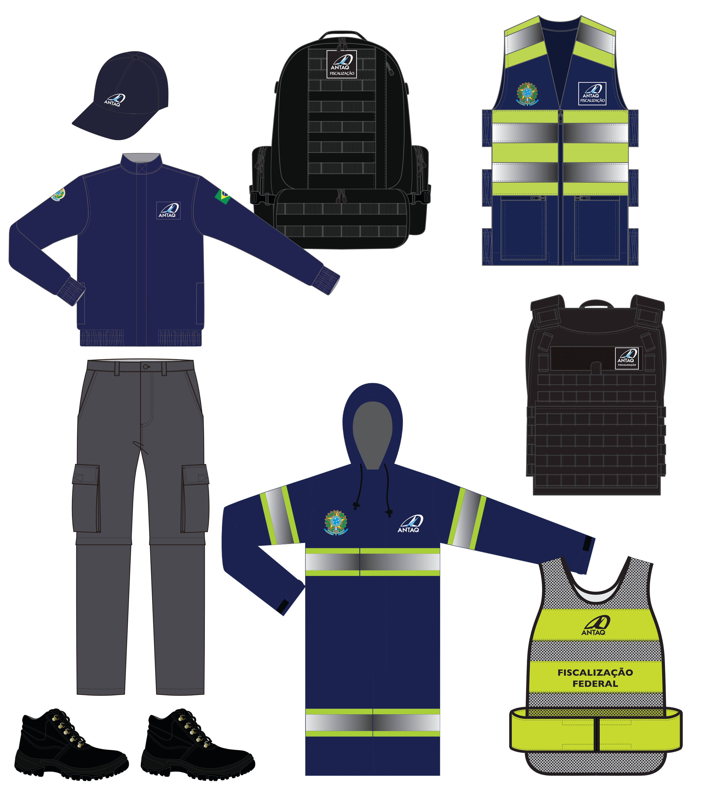

Uniformes da Fiscalização ANTAQ
PLANEJAMENTO


Identidade visual da Fiscalização
Nova padronização do vestuário e dos itens de campo da Fiscalização ANTAQ, reforçando o reconhecimento institucional, a segurança e a uniformidade da equipe em operação.
Itens do conjunto
Trilha Técnica da Fiscalização · SFC / GPF — ANTAQ
33 / 61